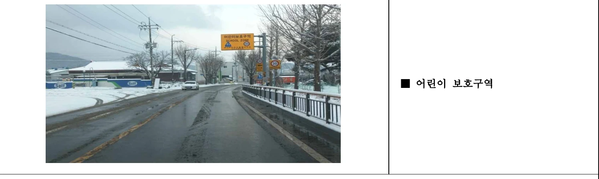

752. 关于下列区段的说明中正确的两项是？

- ①在儿童保护区域内可以长时间停车或临时停车。
- ②儿童保护区域安装有防护栏时儿童无法进入车道，因此无需注意。
- ③为保护儿童远离交通事故的危险，可以指定儿童保护区域。
- ④考虑到积雪的情况，行驶时应遵守行驶速度，注意儿童安全。
- ⑤由于孩子们会小心，所以不必担心在儿童保护区域内会发生事故。
查看答案
答案
③ 为保护儿童远离交通事故的危险，可以指定儿童保护区域。
④ 考虑到积雪的情况，行驶时应遵守行驶速度，注意儿童安全。
依据
由于位于儿童保护区内，必须遵守最高速度限制，注意儿童的动向，并仔细观察前方。儿童保护区发生事故的原因是不遵守法律，如不安全驾驶、违反行人保护义务、违章停车和停车、违反交通信号灯等。行人过马路时，驾驶人必须停车，待行人走完后确认安全再通行。
依据文字为学习用机器翻译。